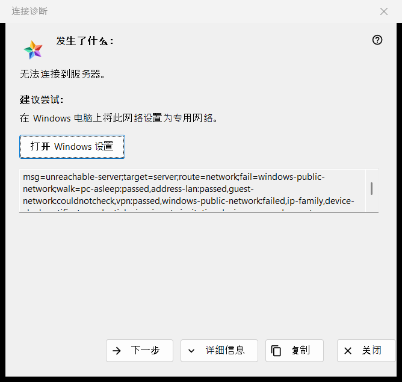
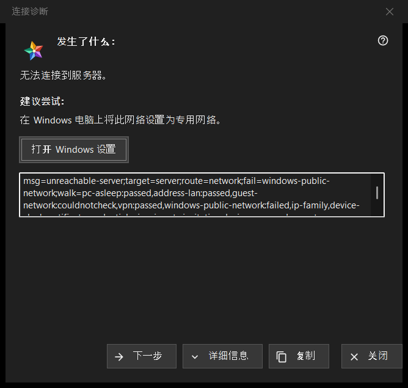

连接诊断
用途说明
解释为什么无法连接到某台服务器或设备，并逐步给出可以尝试的办法。它不会更改电脑或 Windows 的任何设置。它从资源列表「更多」菜单（针对选中的行）中的「为什么连不上？..」打开，也会从「我的设备」中正在重新登录、显示证书已更改或无法连接的服务器条目打开，并在打开资源失败时自动打开。


操作顺序
- 阅读「发生了什么：」。
- 尝试「建议尝试：」中所说的做法。
- 如果原因不在此，点击「下一步」。
- 如果有人需要这些代码，点击「详细信息」，再点击「复制」把它们交出去。
- 关闭窗口。
界面元素
发生了什么
一句关于故障的话，例如「无法连接到服务器。」、「登录名或密码错误。」或「此服务器与之前连接的服务器不一致。」。它取决于打开该窗口的故障类型。
建议尝试
窗口从检查中第一个失败的步骤开始，如果没有失败的步骤，则从第一步开始。典型的步骤有：唤醒运行服务器的设备，确认两台设备在同一网络，离开访客 Wi-Fi，暂时关闭 VPN，把 Windows 网络设置为专用网络，从另一个网络检查服务器，设置正确的日期和时间，确认新的指纹，重新输入用户名和密码。最后一步说明，只有服务器的运营者才能解决。
下一步与 Windows 设置
「下一步」在各步骤间前进，到最后一步时消失。对于 Windows 设置可以解决的两个步骤，即网络配置文件和时钟，「打开 Windows 设置」按钮会打开对应的 Windows 页面；程序本身不会更改任何内容。
详细信息与复制
「详细信息」显示或隐藏一个只读框，其中是诊断代码：故障类型、目标、路线、失败的步骤以及走过的步骤。其中绝不包含地址、用户名、密码或指纹。「复制」把这一行放到剪贴板，窗口提示「诊断代码已复制到剪贴板。」
检查如何进行
检查只针对你尝试的那次连接，并且只读取：它尝试连通主机和端口，并查看网络状态、VPN 适配器、Windows 网络配置文件、地址族、时钟和证书。它在第一个失败的步骤处停止，无法完成的检查既不算通过，也不算失败。